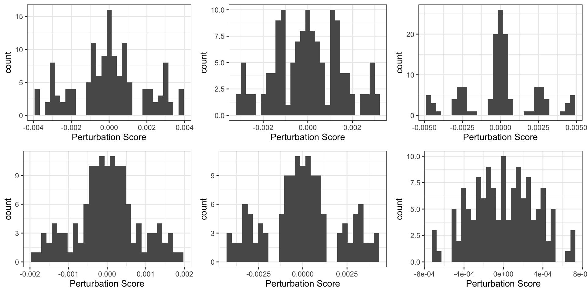

Last updated: 2023-09-21
Checks: 6 1
Knit directory: MDA-MB-453_DHT-RNASeq/
This reproducible R Markdown analysis was created with workflowr (version 1.7.0). The Checks tab describes the reproducibility checks that were applied when the results were created. The Past versions tab lists the development history.
The R Markdown is untracked by Git. To know which version of the R
Markdown file created these results, you’ll want to first commit it to
the Git repo. If you’re still working on the analysis, you can ignore
this warning. When you’re finished, you can run
wflow_publish to commit the R Markdown file and build the
HTML.
Great job! The global environment was empty. Objects defined in the global environment can affect the analysis in your R Markdown file in unknown ways. For reproduciblity it’s best to always run the code in an empty environment.
The command set.seed(20200930) was run prior to running
the code in the R Markdown file. Setting a seed ensures that any results
that rely on randomness, e.g. subsampling or permutations, are
reproducible.
Great job! Recording the operating system, R version, and package versions is critical for reproducibility.
Nice! There were no cached chunks for this analysis, so you can be confident that you successfully produced the results during this run.
Great job! Using relative paths to the files within your workflowr project makes it easier to run your code on other machines.
Great! You are using Git for version control. Tracking code development and connecting the code version to the results is critical for reproducibility.
The results in this page were generated with repository version 9aaff4f. See the Past versions tab to see a history of the changes made to the R Markdown and HTML files.
Note that you need to be careful to ensure that all relevant files for
the analysis have been committed to Git prior to generating the results
(you can use wflow_publish or
wflow_git_commit). workflowr only checks the R Markdown
file, but you know if there are other scripts or data files that it
depends on. Below is the status of the Git repository when the results
were generated:
Ignored files:
Ignored: .RData
Ignored: .Rhistory
Ignored: .Rproj.user/
Untracked files:
Untracked: .DS_Store
Untracked: analysis/sPLS-DA.Rmd
Untracked: analysis/sSNAPPY.Rmd
Untracked: output/MDA453_permutedscore.rds
Unstaged changes:
Modified: analysis/dge_analysis.Rmd
Modified: output/MDA-MB-453_CPM.tsv
Modified: output/MDA-MB-453_RNASeq.tsv
Modified: output/dge.rds
Note that any generated files, e.g. HTML, png, CSS, etc., are not included in this status report because it is ok for generated content to have uncommitted changes.
There are no past versions. Publish this analysis with
wflow_publish() to start tracking its development.
library(tidyverse)
library(yaml)
library(scales)
library(pander)
library(glue)
library(edgeR)
library(AnnotationHub)
library(ensembldb)
library(magrittr)
library(cowplot)
library(ggfortify)
library(cqn)
library(ggrepel)
library(DT)
library(randomcoloR)
library(ggforce)
library(sSNAPPY)
library(rvest)
library(xml2)
library(BSDA)
library(corrplot)panderOptions("table.split.table", Inf)
panderOptions("big.mark", ",")
theme_set(theme_bw())config <- here::here("config/config.yml") %>%
read_yaml()
suffix <- paste0(config$tag)
sp <- config$ref$species %>%
str_replace("(^[a-z])[a-z]*_([a-z]+)", "\\1\\2") %>%
str_to_title()if (!dir.exists(here::here("docs/assets"))) dir.create(here::here("docs/assets"))ah <- AnnotationHub() %>%
subset(rdataclass == "EnsDb") %>%
subset(str_detect(description, as.character(config$ref$release))) %>%
subset(genome == config$ref$build)
stopifnot(length(ah) == 1)ensDb <- ah[[1]]
genesGR <- read_rds(here::here("output/genesGR.rds"))Gene annotations were again loaded from Ensembl Release 101. The previously defined
GenomicRanges object containing GC content and Gene Length
was also loaded, containing information for 67,990 genes.
diag_cols <- readRDS("~/GSE800098/output/diag_cols.rds")The filtered and normalised DGEList was loaded in.
dge <- here::here("output/dge.rds") %>%
read_rds()
logCPM <- dge$counts %>%
edgeR::cpm(log = TRUE)To apply the sSNAPPY algorithm, pathway topologies of
KEGG pathways were firstly retrieved.
gsTopology <- retrieve_topology(database = "kegg", species = "hsapien")315 KEGG pathways were retrieved but as described in the PDE study, irrelevant pathways are removed to keep only the 235 relevant pathways.
gsTokeep <- readRDS("~/20131906_HickeyT_JC_NormalBreast/output/kg_gsTokeep.rds")
gsTopology <- gsTopology %>%
.[names(.) %in% gsTokeep]To compute the single-sample logFCs required, rownames of the logCPM
matrix need to be converted to entrez id first.
rownames(logCPM) <- mapIds(ensDb, rownames(logCPM), "ENTREZID", keytype = "GENEID")
# Remove genes that couldn't be matched to entrez IDs
logCPM <- logCPM[!is.na(rownames(logCPM)),]Weighted single sample logFCs were computed from the logCPM matrix.
metadata <- dge$samples %>%
dplyr::rename(treatment = treat) %>%
droplevels() %>%
mutate(
treatment = relevel(treatment, ref = "Vehicle")
)
weightedFC <- weight_ss_fc(logCPM, metadata, sampleColumn = "name",
treatColumn = "treatment",
groupBy = "rep")Raw single sample perturbation scores for each treated sample each KEGG pathway were calculated.
gene_pert <- sSNAPPY::raw_gene_pert(weightedFC$weighted_logFC, gsTopology)
ssPertScore <- pathway_pert(gene_pert, weightedFC = weightedFC$weighted_logFC)Null distribution of perturbation scores were generated through sample label permutations.
set.seed(123)
permutedScore <- generate_permuted_scores(
logCPM,
gsTopology = gsTopology,
weight = weightedFC$weight
)
write_rds(permutedScore, here::here("output/MDA453_permutedscore.rds"))
permutedScore <- read_rds(here::here("output/MDA453_permutedscore.rds"))Since the sample size is fairly short (ie. 12 samples), the maximum number of possible permutation pairs is 132. The permuted distributions don’t look very impressive.
set.seed(123)
pl <- permutedScore %>%
keep(~all(.!=0)) %>%
.[sample(seq_along(.), 6)] %>%
lapply(
function(x){
ggplot(mapping = aes(x)) +
geom_histogram() +
xlab("Perturbation Score")
}
)
plot_grid(plotlist = pl, nrow = 2)
Raw perturbation scores were converted to robust z-scores based on the median and MAD derived from the null distributions. A permuted p-value was computed for each single-sample perturbation scores and corrected for multiple testings.
No pathway was defined to be significantly perturbed at individual sample levels.
normalisedScores <- normalise_by_permu(permutedScore, ssPertScore)
normalisedScores %>%
dplyr::filter(adjPvalue < 0.05)[1] MAD MEDIAN gs_name sample score robustZ pvalue
[8] adjPvalue
<0 rows> (or 0-length row.names)Using the sample-level perturbation scores obtained above, we can testing for group-level perturbation by applying t-tests across all treated samples. Using a FDR cut-off of 0.05, only 2 pathways were considered to be significantly perturbed
z_matrix <- normalisedScores %>%
dplyr::select(robustZ, gs_name, sample) %>%
# dplyr::filter(sample != "MDA2-D") %>%
pivot_wider(names_from = "sample", values_from = "robustZ") %>%
column_to_rownames("gs_name") %>%
as.matrix()
sapply(rownames(z_matrix), function(x){
test <- t.test(z_matrix[x,])
data.frame(
gs_name = x,
pvalue = test$p.value,
t_statistic = test$statistic
)
}, simplify = FALSE) %>%
bind_rows() %>%
mutate(FDR = p.adjust(pvalue, "fdr")) %>%
dplyr::filter(
FDR < 0.05
) gs_name pvalue t_statistic FDR
t...1 kegg.Huntington disease 0.0001847496 9.839290 0.01563088
t...2 kegg.Viral myocarditis 0.0002155983 9.526681 0.01563088
sessionInfo()R version 4.3.0 (2023-04-21)
Platform: x86_64-apple-darwin20 (64-bit)
Running under: macOS Ventura 13.3.1
Matrix products: default
BLAS: /Library/Frameworks/R.framework/Versions/4.3-x86_64/Resources/lib/libRblas.0.dylib
LAPACK: /Library/Frameworks/R.framework/Versions/4.3-x86_64/Resources/lib/libRlapack.dylib; LAPACK version 3.11.0
locale:
[1] en_US.UTF-8/en_US.UTF-8/en_US.UTF-8/C/en_US.UTF-8/en_US.UTF-8
time zone: Australia/Adelaide
tzcode source: internal
attached base packages:
[1] splines stats4 stats graphics grDevices utils datasets
[8] methods base
other attached packages:
[1] corrplot_0.92 BSDA_1.2.1 lattice_0.21-8
[4] xml2_1.3.5 rvest_1.0.3 sSNAPPY_1.5.1
[7] ggforce_0.4.1 randomcoloR_1.1.0.1 DT_0.28
[10] ggrepel_0.9.3 cqn_1.46.0 quantreg_5.95
[13] SparseM_1.81 preprocessCore_1.62.1 nor1mix_1.3-0
[16] mclust_6.0.0 ggfortify_0.4.16 cowplot_1.1.1
[19] magrittr_2.0.3 ensembldb_2.24.0 AnnotationFilter_1.24.0
[22] GenomicFeatures_1.52.1 AnnotationDbi_1.62.2 Biobase_2.60.0
[25] GenomicRanges_1.52.0 GenomeInfoDb_1.36.1 IRanges_2.34.1
[28] S4Vectors_0.38.1 AnnotationHub_3.8.0 BiocFileCache_2.8.0
[31] dbplyr_2.3.3 BiocGenerics_0.46.0 edgeR_3.42.4
[34] limma_3.56.2 glue_1.6.2 pander_0.6.5
[37] scales_1.2.1 yaml_2.3.7 lubridate_1.9.2
[40] forcats_1.0.0 stringr_1.5.0 dplyr_1.1.2
[43] purrr_1.0.1 readr_2.1.4 tidyr_1.3.0
[46] tibble_3.2.1 ggplot2_3.4.2 tidyverse_2.0.0
[49] workflowr_1.7.0
loaded via a namespace (and not attached):
[1] later_1.3.1 BiocIO_1.10.0
[3] bitops_1.0-7 filelock_1.0.2
[5] polyclip_1.10-4 graph_1.78.0
[7] XML_3.99-0.14 lifecycle_1.0.3
[9] rprojroot_2.0.3 processx_3.8.2
[11] MASS_7.3-60 sass_0.4.6
[13] rmarkdown_2.23 jquerylib_0.1.4
[15] httpuv_1.6.11 RColorBrewer_1.1-3
[17] DBI_1.1.3 zlibbioc_1.46.0
[19] Rtsne_0.16 ggraph_2.1.0
[21] RCurl_1.98-1.12 tweenr_2.0.2
[23] rappdirs_0.3.3 git2r_0.32.0
[25] GenomeInfoDbData_1.2.10 pheatmap_1.0.12
[27] MatrixModels_0.5-2 codetools_0.2-19
[29] DelayedArray_0.26.6 tidyselect_1.2.0
[31] farver_2.1.1 viridis_0.6.4
[33] matrixStats_1.0.0 GenomicAlignments_1.36.0
[35] jsonlite_1.8.7 e1071_1.7-13
[37] ellipsis_0.3.2 tidygraph_1.2.3
[39] survival_3.5-5 tools_4.3.0
[41] progress_1.2.2 Rcpp_1.0.11
[43] gridExtra_2.3 here_1.0.1
[45] xfun_0.39 MatrixGenerics_1.12.2
[47] withr_2.5.0 BiocManager_1.30.21
[49] fastmap_1.1.1 fansi_1.0.4
[51] callr_3.7.3 digest_0.6.33
[53] timechange_0.2.0 R6_2.5.1
[55] mime_0.12 colorspace_2.1-0
[57] gtools_3.9.4 biomaRt_2.56.1
[59] RSQLite_2.3.1 utf8_1.2.3
[61] generics_0.1.3 class_7.3-22
[63] rtracklayer_1.60.0 prettyunits_1.1.1
[65] graphlayouts_1.0.0 httr_1.4.6
[67] htmlwidgets_1.6.2 S4Arrays_1.0.4
[69] graphite_1.46.0 whisker_0.4.1
[71] pkgconfig_2.0.3 gtable_0.3.3
[73] blob_1.2.4 XVector_0.40.0
[75] htmltools_0.5.5 ProtGenerics_1.32.0
[77] png_0.1-8 knitr_1.43
[79] rstudioapi_0.15.0 reshape2_1.4.4
[81] tzdb_0.4.0 rjson_0.2.21
[83] curl_5.0.1 org.Hs.eg.db_3.17.0
[85] proxy_0.4-27 cachem_1.0.8
[87] BiocVersion_3.17.1 parallel_4.3.0
[89] restfulr_0.0.15 pillar_1.9.0
[91] grid_4.3.0 vctrs_0.6.3
[93] promises_1.2.0.1 xtable_1.8-4
[95] cluster_2.1.4 evaluate_0.21
[97] cli_3.6.1 locfit_1.5-9.8
[99] compiler_4.3.0 Rsamtools_2.16.0
[101] rlang_1.1.1 crayon_1.5.2
[103] labeling_0.4.2 ps_1.7.5
[105] plyr_1.8.8 getPass_0.2-2
[107] fs_1.6.2 stringi_1.7.12
[109] viridisLite_0.4.2 BiocParallel_1.34.2
[111] munsell_0.5.0 Biostrings_2.68.1
[113] lazyeval_0.2.2 V8_4.3.2
[115] Matrix_1.6-0 hms_1.1.3
[117] bit64_4.0.5 KEGGREST_1.40.0
[119] shiny_1.7.4.1 highr_0.10
[121] SummarizedExperiment_1.30.2 interactiveDisplayBase_1.38.0
[123] igraph_1.5.0 memoise_2.0.1
[125] bslib_0.5.0 bit_4.0.5